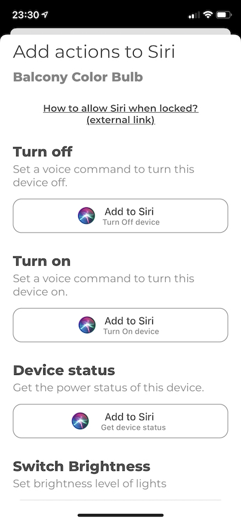

How to Use Siri to Control Your Tapo (TP-Link) Devices
Would it be nice to have Hey Siri turn off my TV?
A recent update to version 3.0.0 for Watt for Smart Devices brought support for Tapo product lines and with that the Siri support using Siri Shortcuts.
The addition of Siri Shortcuts brings convenient voice controls through iOS and the HomePod for accessories. Once you have the Watt app installed, users will see the app listed among other apps in Apple's Shortcuts or you can go directly to App Watt and select the device and finally add Siri commands directly from the app.
Controls through Siri include changing lighting color and brightness, control Space (Group of devices), get information about power status and turning on/off devices.
Download app TODAY and enjoy Hey Siri!